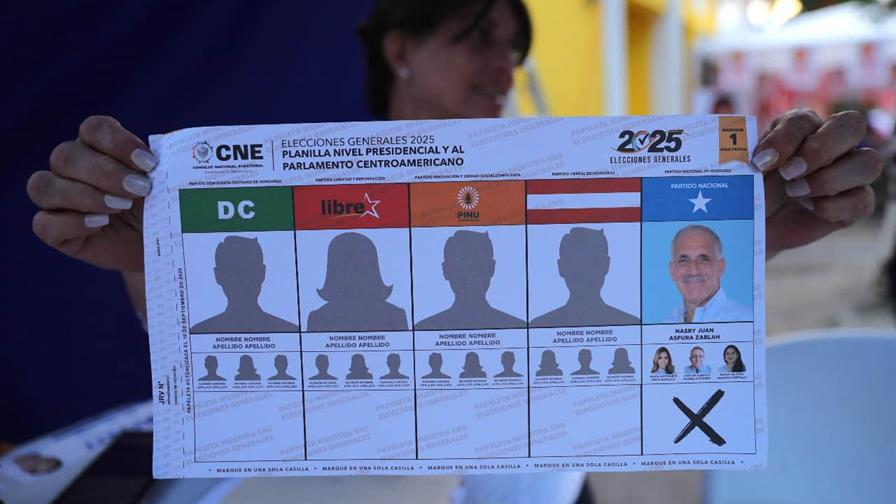

Honduras elige presidente este domingo bajo amenaza de Donald Trump

Los hondureños eligen presidente este domingo en unos comicios reñidos y bajo amenaza del mandatario de Estados Unidos, Donald Trump, quien pidió el voto para el derechista Nasry Asfura con pena de cortar la ayuda al país.
Saber mas...